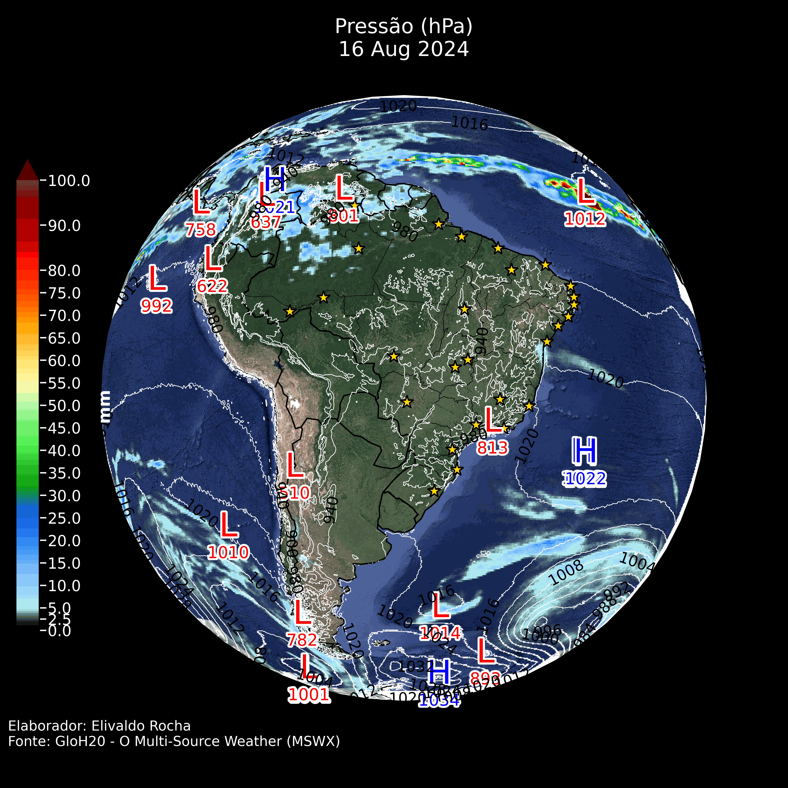
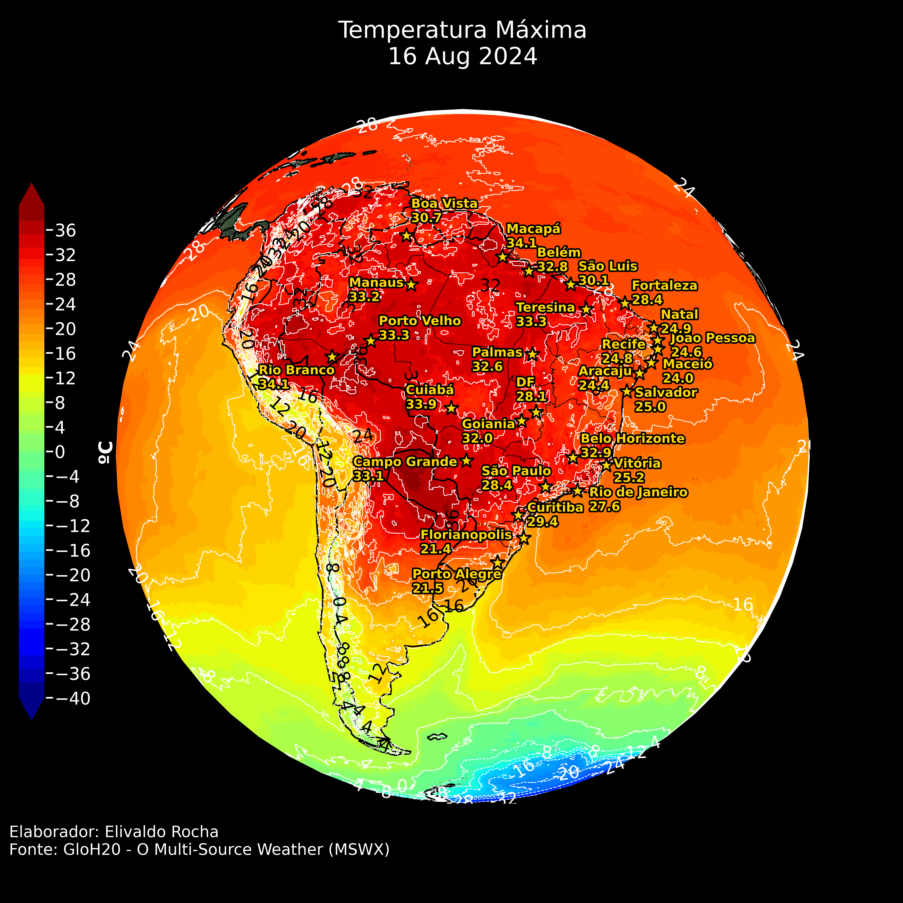
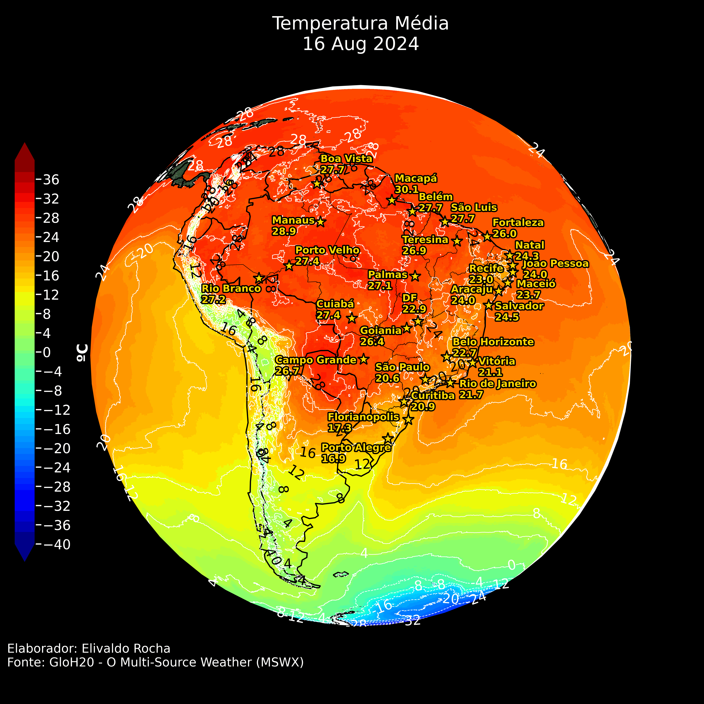
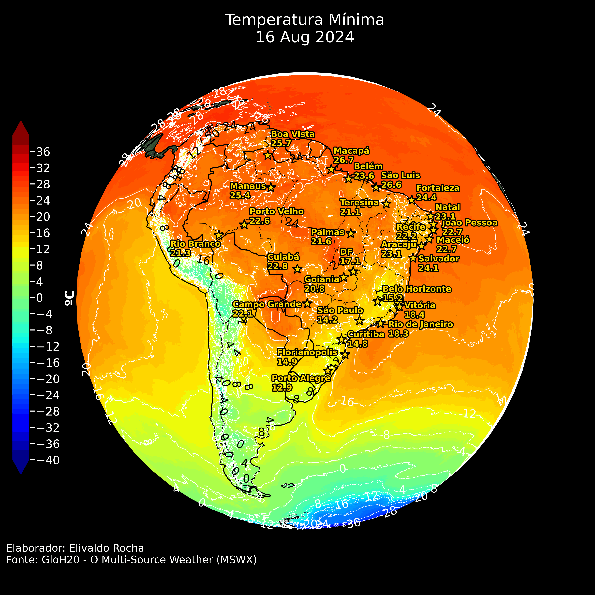

Clique nas setas ou para visualizar as previsões.
Resumo:
O dia 16 de agosto de 2024 é marcado pela persistência de áreas de baixa pressão sobre o Chile e Argentina, além de uma alta pressão sobre o Atlântico Sul (ASAS), resultando em condições de instabilidade em partes do Sudeste e estabilidade no Sul do Brasil. As temperaturas permanecem elevadas no Centro-Oeste e Norte, com umidade alta na região amazônica, favorecendo a formação de chuvas dispersas. O litoral nordestino continua sob influência de umidade atlântica, enquanto o interior do país permanece seco e estável.